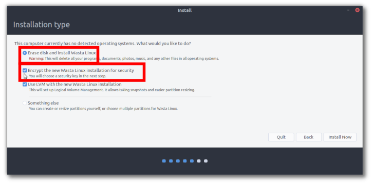
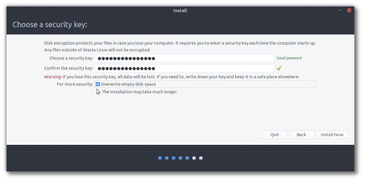
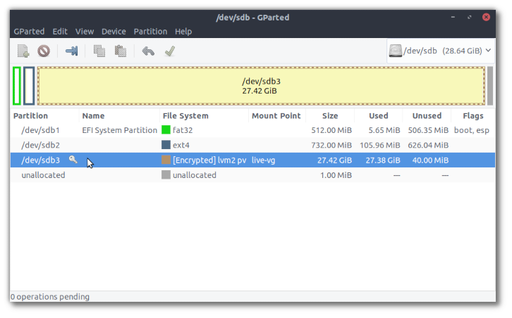
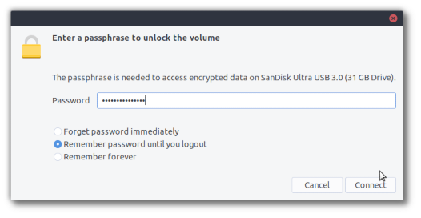

Wasta-Linux: Installing to an Encrypted USB Drive
It may be desirable to install Wasta-Linux to an encrypted USB drive for security or portability. Following this guide you will need 2 USB drives, one with a standard Wasta-Linux “live installer” ISO and a second USB drive (preferably a 32+ GB high quality USB3 drive) that will be your target encrypted USB Wasta-Linux system.
-
Machine Setup
In order to ensure the USB drive will be UEFI/Secure Boot compatible, make sure the machine is in “Secure Boot / UEFI mode.”
-
Remove internal HDD
It is recommended to remove the internal HDD so that when building the USB system it will not be aware of the internal HDD OS. Then when booting from the USB system it will not stop at a “GRUB” prompt. Removing the internal HDD also ensures you will not risk installing incorrectly and damaging your internal HDD’s OS.
-
Boot the Wasta-Linux “USB live installer”
Do not have your “target USB drive” inserted into the machine at this point. Boot the “Live Installer” as normal.
-
Insert “target USB drive”, Start Installer
When coming to the “Installation type” screen, choose “Erase Disk and install Wasta-Linux.” Also ticked the box next to “Encrypt the new Wasta Linux installation for security” (which then by default selects the LVM tick box as well). See screenshot below:

-
Setup Encryption Security Key
Enter an encryption key and optionally chose to overwrite empty disk space for additional security. See screenshot below:

-
Complete Installation
Continue with the installation until finished. FYI the final partitioning on my test target USB is as follows in gparted:
-
/dev/sda1: 512MB fat32 <boot, esp flags>
-
mount point: /boot/efi
-
/dev/sda2: 732MB ext4
-
mount point: /boot
-
/dev/sda3: 27.42GB [Encrypted] lvm2 pv
-
mount point: live-vg (when unencrypted it is “/”)
See screenshot below:

-
-
Test target USB system
Shutdown and unplug the “Live System USB”. Then re-insert the original HDD, and, ensuring the “target USB system” is connected, start the computer. Press the required key to bring up the “Boot Manager”, and select the USB drive. The target USB system should boot, prompting for the disk encryption key before unencrypting the drive. This “target USB system” should be able to boot on machines using UEFI / Secure Boot and on machines using “Legacy Boot”. There may be a message that flashes by when booting indicating something about “Boot Order” but it can be ignored.
-
Inserting target USB system when running a different OS
Inserting the USB into another computer already running Linux will prompt for the encryption key before mounting the USB drive. A machine running Windows will not be able to prompt for the encryption key and will not be able to mount the USB drive. So overall this seems like a quite secure system that is not known to the host machine. See screenshot below to see the prompt that comes up when inserting the USB drive into an already-running Linux system:
